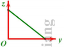
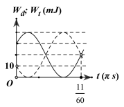
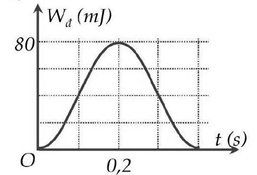

PHẦN I. Câu trắc nghiệm nhiều phương án lựa chọn
Mỗi câu có 4 phương án, chỉ chọn một đáp án đúng (0,25 điểm).
1
Đồ thị dưới đây biểu diễn sự biến thiên của một đại lượng z theo đại lượng y trong dao động điều hòa của con lắc đơn. Khi đó li độ của con lắc là x, vận tốc là v, thế năng là $E_t$ và động năng là $E_đ$. Đại lượng z, y ở đây có thể là:

2
Một vật nhỏ khối lượng 100g dao động điều hòa trên một quỹ đạo thẳng dài 20cm với tần số góc 6 rad/s. Cơ năng của vật dao động này là
3
Cơ năng của một vật dao động điều hòa
4
Một con lắc lò xo dao động điều hòa với phương trình $x = A\cos\omega t$ và có cơ năng là $E$. Động năng của vật tại thời điểm $t$ là
5
Trong dao động điều hòa khi động năng giảm đi 2 lần so với động năng cực đại thì:
6
Một con lắc lò xo dao động điều hòa với tần số $2f_1$. Động năng của con lắc biến thiên tuần hoàn theo thời gian với tần số $f_2$ bằng
7
Con lắc lò xo dao động với biên độ 6 cm. Xác định li độ của vật để thế năng của lò xo bằng $1/3$ động năng.
8
Một vật nhỏ có khối lượng $2/\pi^2$ (kg) dao động điều hòa với tần số 5 Hz, và biên độ 5 cm. Tính cơ năng dao động.
9
Chọn kết luận đúng:
10
Con lắc lò xo dao động điều hòa theo phương ngang với biên độ $A$. Li độ của vật khi động năng bằng một nửa thế năng của lò xo là
11
Một con lắc lò xo gồm vật nặng có khối lượng m = 0,4 kg và lò xo có độ cứng k = 100 N/m. Kéo vật ra khỏi VTCB 2 cm rồi truyền cho vật vận tốc đầu $15\sqrt{5}\pi$ cm/s. Lấy $\pi^{2}=10$. Năng lượng dao động của vật là:
12
Một vật có khối lượng 1 kg dao động điều hòa xung quanh vị trí cân bằng. Đồ thị dao động của thế năng của vật như hình vẽ. Cho $\pi^{2}=10$ thì biên độ dao động của vật là

13
Một vật nhỏ có khối lượng 500 g dao động điều hòa trên trục Ox, đồ thị động năng (nét liền) và thế năng (nét đứt) của vật theo thời gian như hình vẽ. Biên độ dao động của vật là

14
Một vật dao động điều hòa với tần số $f=2$ Hz. Tại thời điểm $t_1$, vật có động năng bằng 3 lần thế năng. Đến thời điểm $t_2=t_1+\frac{1}{24}$ s thì thế năng của vật có thể
15
Một vật có khối lượng 100 g dao động điều hòa có vận tốc cực đại bằng 3 m/s và gia tốc cực đại là $30\pi$ (m/s²). Năng lượng của vật trong quá trình dao động là
16
Phương trình dao động điều hoà của một chất điểm là $x=A\cos\left(\omega t+\frac{2\pi}{3}\right)$ (cm). Biểu thức động năng của nó biến thiên theo thời gian là
17
Một vật nhỏ có khối lượng 2 kg dao động điều hòa với tần số góc $\pi$ (rad/s). Khi pha dao động là $\frac{\pi}{2}$ thì vận tốc của vật là $-20\sqrt{3}$ cm/s. Lấy $\pi^2=10$. Khi vật qua vị trí có li độ $3\pi$ (cm) thì động năng của con lắc là
18
Một vật dao động điều hoà, cứ sau mỗi khoảng thời gian $0,5$ s thì động năng lại bằng thế năng của vật. Khoảng thời gian ngắn nhất giữa hai lần động năng bằng ba lần thế năng của vật là
19
Một vật khối lượng 400 g thực hiện dao động điều hòa. Đồ thị bên mô tả động năng $W_d$ của vật theo thời gian $t$. Lấy $\pi^2=10$. Biên độ dao động của vật là

20
Một chất điểm khối lượng $m=100$ g, dao động điều hòa với phương trình $x=4\cos(2t)$ cm. Cơ năng trong dao động điều hòa của chất điểm là